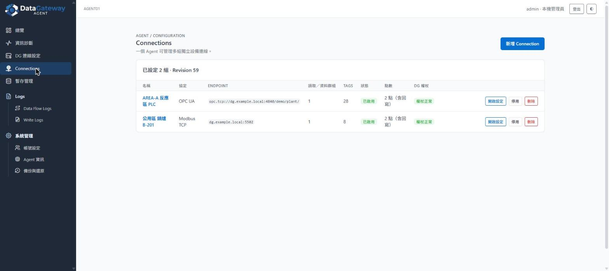
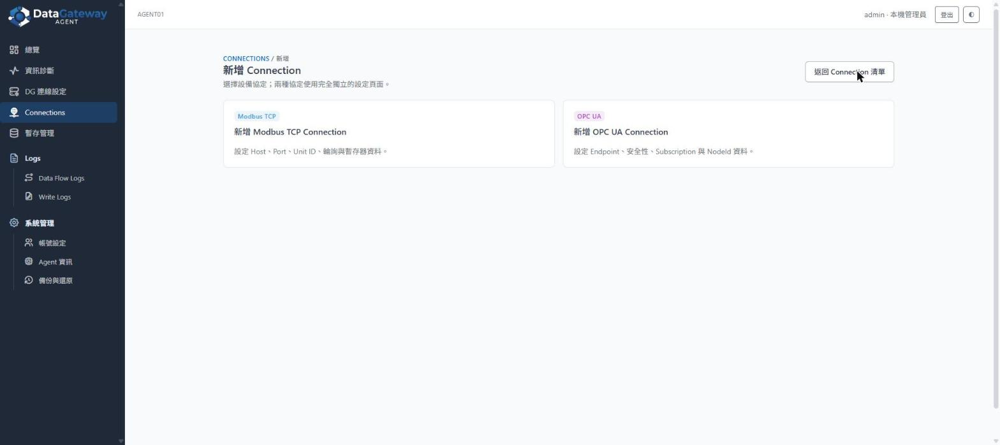

Connections 設備連線
一個 Agent 可管理多組獨立的設備連線。每條連線占 1 點授權，開啟回寫多用 1 點。
查看連線清單

- 點「Connections」。
- 看每條連線的協定、Endpoint、讀取／資料群組數、Tags 數、狀態、點數與 DG 權杖。
- 按「開啟設定」進入連線設定頁。
能確認每條連線已啟用且權杖正常。
失敗時先查
- DG 權杖不是正常：到 DG「授權管理 › 點數使用狀況」確認點數（DG 手冊第 13 章）。
新增設備連線

- 按「新增 Connection」。
- 選「新增 Modbus TCP Connection」或「新增 OPC UA Connection」。
- 畫面提示「這條連線會使用 1 點，DG 目前可用 N 點。新連線預設不開回寫」。依第 5 章（OPC UA）或第 6 章（Modbus TCP）填寫並建立。
清單出現新連線，DG「Tag 管理」在建立 Tag 後出現對應的 Tag。
失敗時先查
- 新增按鈕停用：Agent 還在等待 DG 核准（第 3 章）。
停用與刪除連線
- 暫時不讀取時按「停用」；要恢復時按「啟用」。
- 確定不再使用時按「刪除」並確認。
停用後該連線不再讀取設備；刪除後從清單移除並釋放授權點數。
停用中的連線照樣占用授權點數；要釋放點數請刪除連線。DG 上的 Tag 與歷史不會因刪除連線而消失，會變成無來源。
失敗時先查
- 刪除前確認沒有其他系統依賴這條連線回寫。
開啟或關閉連線回寫
- 在 Connections 按「開啟設定」進入連線。
- 切換右上「回寫」開關。
- 確認視窗「開啟回寫？」說明會多用 1 點，按「開啟回寫」。
開關顯示「回寫：開啟」，授權點數變成 2 點（含回寫）。
回寫是這條連線的總閘：關閉時所有寫入安全規則都不會生效，DG 與 VisoLink 的回寫畫面也看不到這條連線。
失敗時先查
- 開啟後 DG 仍看不到可寫目標：還需要建立寫入安全規則並把 Tag 設為可寫（第 7 章）。